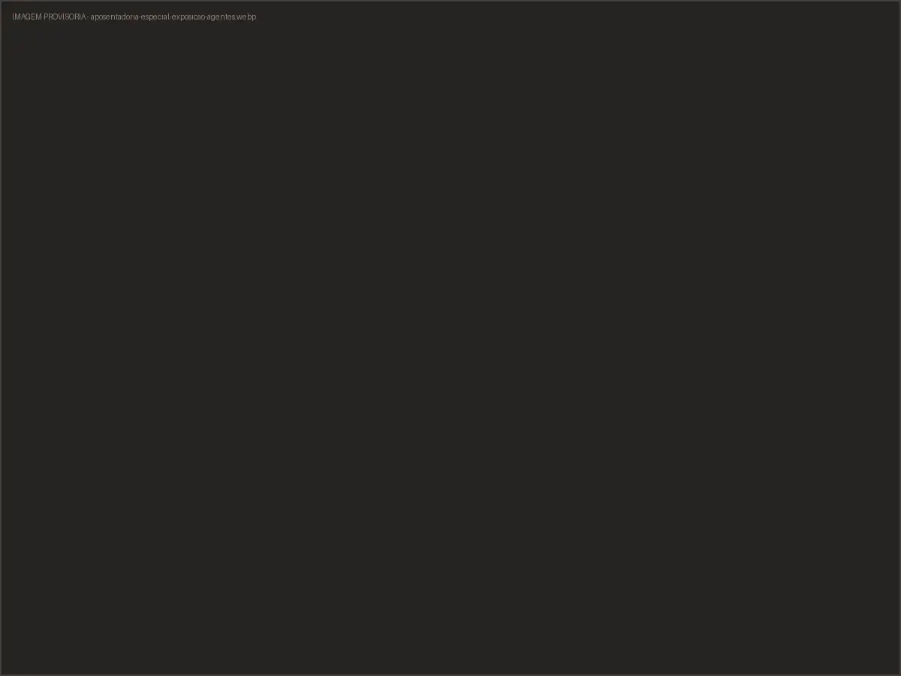

Saúde
Enfermagem, médicos, dentistas e agentes de saúde expostos a vírus, bactérias e material contaminado no dia a dia.
Regras para a enfermagemA aposentadoria especial é o benefício do INSS para quem trabalhou exposto a agentes que fazem mal à saúde, como ruído, produtos químicos e vírus. Ela exige 15, 20 ou 25 anos de exposição, comprovados principalmente pelo Perfil Profissiográfico Previdenciário (PPP). Desde 03/06/2026, o STF não exige mais idade mínima (ADI 6309), mas a decisão ainda pode ser ajustada.
Em resumo
É uma aposentadoria do INSS com tempo menor de trabalho, concedida a quem ficou exposto a agentes que prejudicam a saúde ou a integridade física. O tempo reduzido compensa o desgaste causado pelo ambiente de trabalho.
A regra está nos artigos 57 e 58 da Lei 8.213/1991, a lei de benefícios da Previdência. A lista dos agentes que contam está no Anexo IV do Decreto 3.048/1999.
O que dá direito não é o nome do cargo, e sim a exposição ao agente nocivo. Dois trabalhadores com a mesma função podem ter situações diferentes, conforme o setor, as máquinas e os produtos com que lidam.
A exposição precisa ser de forma habitual e permanente: fazer parte da rotina do trabalho, e não acontecer de vez em quando. Essa diferença aparece no PPP e é um dos pontos que o INSS mais confere.

Os requisitos dependem da época em que você trabalhou: cada período segue a lei daquele tempo. Por isso, quem tem uma carreira longa costuma misturar regras diferentes no mesmo pedido.
| Período trabalhado | Como o tempo especial é reconhecido | Prova mais comum |
|---|---|---|
| Até 28/04/1995 | Pela categoria profissional (a função estava numa lista oficial) ou pela exposição ao agente | Carteira de trabalho e formulários antigos da empresa |
| 29/04/1995 a 05/03/1997 | Só pela exposição efetiva ao agente nocivo; a função sozinha deixa de bastar | Formulário da empresa; laudo exigido para ruído e calor [CONFIRMAR com o advogado: entre 1995 e 1997 o laudo era exigido só para ruído e calor?] |
| 06/03/1997 a 13/11/2019 | Exposição comprovada por formulário baseado em laudo técnico; o tempo especial ainda pode ser convertido em comum | PPP com base no LTCAT |
| A partir de 13/11/2019 (Reforma) | Exposição comprovada; sem conversão em comum; idade mínima derrubada pela ADI 6309, com embargos pendentes | PPP, LTCAT e eventos do eSocial |
Até 28/04/1995, bastava provar que você exercia uma função da lista oficial, como soldador ou motorista de ônibus, para o tempo contar como especial. Essa regra se chama enquadramento por categoria profissional e acabou com a Lei 9.032/1995. Para esses anos, a prova costuma ser a carteira de trabalho e os formulários antigos, como o SB-40.
A EC 103/2019, em vigor desde 13/11/2019, proibiu converter o tempo especial trabalhado depois dessa data, mudou o cálculo do valor e criou idades mínimas. As idades caíram no STF em 2026; a proibição de conversão e o novo cálculo continuam valendo. A regra de transição por pontos tem página própria em idade mínima e regra de transição.
Em 03/06/2026, o STF derrubou a idade mínima da aposentadoria especial do INSS (55, 58 e 60 anos). Continuam exigidos o tempo de exposição e as demais regras.
O Plenário declarou inconstitucional apenas a parte da Reforma que fixava as idades mínimas. Dois pontos continuam valendo: a conversão de tempo especial em comum depois de 13/11/2019 segue proibida, e o cálculo do valor segue o da Reforma.
O acórdão foi publicado em 02/10/2026. A Advocacia-Geral da União e outra parte apresentaram embargos de declaração em outubro, que estavam com o relator em 23/11/2026. Esses recursos podem definir a partir de quando e para quem a decisão vale. Acompanhe os detalhes na página da ADI 6309, com o andamento atualizado.
Outras decisões recentes também mexem com profissões específicas. O caso mais citado é o do vigilante: o STF fixou tese no Tema 1209 contra a contagem especial dessa atividade, com embargos ainda em julgamento. Veja a explicação completa na página sobre a aposentadoria do vigilante.
Tem direito quem comprova exposição a agente nocivo pelo tempo exigido, seja empregado, trabalhador avulso ou, em certos casos, autônomo. A profissão ajuda a identificar o risco, mas a prova da exposição é o que decide.
Enfermagem, médicos, dentistas e agentes de saúde expostos a vírus, bactérias e material contaminado no dia a dia.
Regras para a enfermagemEletricistas e trabalhadores de redes que atuam com tensão elétrica acima de 250 volts, com risco de choque e queimadura.
Regras para eletricistasMotoristas e cobradores de ônibus e caminhão, em especial pelo ruído e pela vibração do veículo ao longo da jornada.
Regras para motoristasTambém aparecem com frequência frentistas, soldadores, metalúrgicos, mecânicos e mineiros. Mulheres seguem os mesmos 15, 20 ou 25 anos de exposição que os homens; a diferença está no cálculo e na conversão. A lista completa, com a situação de cada atividade, está no guia de quem tem direito à aposentadoria especial.
Profissionais autônomos, como dentistas com consultório próprio, enfrentam mais resistência do INSS. A explicação está na página sobre a aposentadoria especial do contribuinte individual.
O tempo depende do agente nocivo: 25 anos é a regra para a maioria, 20 anos vale para casos como o amianto e 15 anos para o trabalho em mina subterrânea na frente de produção.
| Tempo exigido | Exemplos de atividade |
|---|---|
| 25 anos | Ruído acima do limite, agentes químicos e biológicos, eletricidade reconhecida pelo STJ no Tema 534 (a maioria dos casos) |
| 20 anos | Exposição ao amianto e trabalho em mina subterrânea afastado da frente de produção |
| 15 anos | Trabalho em mina subterrânea, na frente de produção |
Os detalhes de cada faixa e o que fazer quando a carreira mistura agentes estão em aposentadoria especial de 15, 20 e 25 anos.
Contam os agentes físicos, químicos e biológicos listados no Anexo IV do Decreto 3.048/1999, acima dos limites de tolerância quando a norma fixa um limite.
Ruído, calor, vibração, radiação e pressão anormal, medidos com metodologia própria e comparados ao limite de cada época. Frio e umidade só constavam dos decretos antigos.
Limites de ruído por períodoBenzeno, hidrocarbonetos, solventes, fumos metálicos e poeiras como a sílica, presentes em postos, oficinas e indústrias.
Agentes químicos que contamVírus, bactérias e fungos no contato com pacientes, material contaminado, esgoto e lixo urbano durante a jornada.
Agentes biológicos na práticaInsalubridade e periculosidade são conceitos da área trabalhista e não se confundem com o tempo especial do INSS. Receber o adicional ajuda como indício, mas não garante a contagem. O mapa completo está no guia de agentes nocivos.
O PPP do INSS é o formulário em que a empresa descreve sua função, os agentes a que você ficou exposto e a intensidade dessa exposição. É a prova central do pedido, prevista no artigo 58 da Lei 8.213/1991.
A empresa preenche o PPP com base no LTCAT, o laudo técnico das condições do trabalho, assinado por engenheiro ou médico do trabalho. Se o laudo estiver errado, o PPP repete o erro.
Problemas comuns: agente sem intensidade, metodologia de medição ausente, EPI marcado como eficaz sem explicação e períodos que não batem com o CNIS. As regras do INSS para o documento estão na IN 128/2022.
Se a empresa fechou ou se recusa a entregar o documento, há caminhos. Comece pelo guia completo do PPP e, para a empresa fechada, veja como conseguir o PPP de empresa que fechou.
Depende de quando você completou os requisitos. Antes da Reforma, o valor era 100% da média salarial; depois dela, começa em 60% da média e sobe conforme o tempo de contribuição [CONFIRMAR: regra de 100% do salário de benefício no art. 57, § 1º, da Lei 8.213 para quem cumpriu os requisitos até 13/11/2019].
| Direito completado | Como o valor é calculado |
|---|---|
| Até 13/11/2019 | 100% da média dos maiores salários, sem fator previdenciário [CONFIRMAR: média dos 80% maiores salários desde 07/1994] |
| Depois de 13/11/2019 | 60% da média de todos os salários, mais 2 pontos percentuais por ano acima de 20 anos (homens) ou 15 anos (mulheres e atividades de 15 anos) |
O valor inicial do benefício se chama RMI (renda mensal inicial). A explicação com exemplos está em como calcular o valor da aposentadoria especial.
Sim, mas só para o trabalho feito até 13/11/2019. Esse tempo pode ser multiplicado e somado a uma aposentadoria comum, o que ajuda quem não completou 25 anos de exposição.
Exemplo usado com frequência: 5 anos de atividade especial de 25 anos viram 7 anos para o homem (fator 1,4) e 6 anos para a mulher (fator 1,2), pelos fatores tradicionalmente aplicados (tabela do art. 70 do Decreto 3.048, na redação de 2003). Para o trabalho depois da Reforma, a conversão é proibida, e esse ponto não mudou com a ADI 6309.
Faça a conta com o seu período na calculadora de conversão de tempo especial em comum.
O pedido é feito pelo Meu INSS, com o PPP e os documentos de cada empresa. Conferir os documentos antes de pedir evita a maioria das negativas.
Carteira de trabalho, PPP de cada empresa, LTCAT quando houver e o extrato do CNIS.
Veja se os agentes, as intensidades, os períodos e o responsável técnico estão preenchidos.
Pelo site ou aplicativo Meu INSS. A data do pedido vira a DER, que marca o início dos pagamentos.
Cumpra as exigências no prazo. Se houver negativa, cabe recurso administrativo ou ação judicial.
O passo a passo completo, com prazos e telas, está em como pedir a aposentadoria especial. Se o pedido já foi negado, veja o caminho do recurso contra a aposentadoria especial negada.
Não, para o INSS. Em 03/06/2026, o STF derrubou as idades de 55, 58 e 60 anos criadas pela Reforma (ADI 6309). Os embargos de declaração ainda não foram julgados e podem ajustar a partir de quando a decisão vale.
A especial exige menos tempo, 15, 20 ou 25 anos, porque o trabalho foi feito exposto a agentes nocivos. A comum exige mais tempo de contribuição e idade. Quem não completa o tempo especial pode converter o período trabalhado até 13/11/2019 e somar à aposentadoria comum.
O tempo de exposição exigido é o mesmo para homens e mulheres. As diferenças aparecem no fator de conversão, que é menor para a mulher, e no cálculo do valor depois da Reforma.
Pode trabalhar, mas não na mesma atividade nociva, segundo o entendimento do STF no Tema 709. Os detalhes estão na página sobre o Tema 709 do STF.
Nem sempre. Para o ruído, o EPI não afasta o direito, segundo o Tema 555 do STF. Para outros agentes, o INSS avalia se o equipamento era de fato eficaz. Veja o que conferir no PPP em EPI eficaz no PPP.
É mais difícil, mas há outras provas: laudos da própria empresa, laudos de empresa parecida, perícia judicial e documentos do sindicato. Veja as opções em como comprovar atividade especial sem PPP.
Não. O adicional é um direito trabalhista e segue critérios próprios. Ele serve como indício, mas o INSS exige a prova da exposição ao agente no PPP e no laudo técnico.
Depende do caso. Quem teve o pedido negado só pela idade, ou recebeu outro benefício no lugar da especial, pode ter algo a rever. Os prazos e os critérios estão em revisão da aposentadoria especial.
O prazo varia conforme a agência e a fila do momento. Um pedido com PPP completo e períodos batendo com o CNIS tende a ter menos exigências e menos idas e vindas.
Informe seus períodos e veja uma estimativa antes de falar com o advogado.
Idade mínima da aposentadoria especial após a ADI 6309: tabela de qual regra vale para você, pontos 66/76/86 e…
Ler sobre idade mínima e regra de transiçãoQual o valor da aposentadoria especial: regra da Reforma (60% + 2%), exceção de 15 anos e exemplos em reais. Envie…
Ler sobre valor e cálculo da aposentadoria especialAposentadoria especial de 15, 20 e 25 anos: tabela de grau de risco, agentes e profissões, e como somar tempos…
Ler sobre aposentadoria especial de 15, 20 e 25 anosComo pedir aposentadoria especial no Meu INSS: documentos, passo a passo, prazo de resposta e exigências. Envie seu…
Ler sobre como pedir a aposentadoria especial![Retrato do advogado Dr. Renato [PREENCHER: sobrenome]](../assets/img/advogado-retrato.webp)
Dr. Renato [PREENCHER: sobrenome]
OAB/GO [PREENCHER] · Advogado previdenciário com atuação em aposentadoria especial e PPP.